الدليل التشغيلي التفصيلي الشامل لمنظومة إدارة الجودة الذكية (QMS 4.0)
Standard Operating Procedure (SOP) & Step-by-Step Work Instruction — النسخة الكاملة غير المختصرة
هذا الدليل هو تعليمة عمل تشغيلية تفصيلية (Work Instruction) تغطي دورة حياة المنتج بالكامل داخل منصة QMS 4.0 من لحظة تأسيس البيانات الهندسية واستلام الخامات، مروراً بخطوط الإنتاج والتجميع والفحص النهائي، ووصولاً إلى العميل.
تم توثيق كل شاشة، وكل خطوة داخل معالجات التسجيل (Wizards)، وكل حقل إدخال (Field)، ونوعه، وخيارات القوائم المنسدلة (Dropdown Options)، وأزرار الإجراءات، والربط الآلي (Auto-Handoff) بين الموديولات بالصور الفعلية من داخل النظام دون أي اختصار.
فهرس المحتويات والسيناريوهات التشغيلية
/ecosystem)/quality/master-data)PFMEA — /fmea)Control Plan — /control-plan)Calibration & MSA — /calibration)Incoming QC - Pass) عبر المعالج الثلاثي (3-Step Wizard) في /inspectionShopfloor Entry — /quality-shopfloor) وفحص نقاط الخطة (PASS)SPC Control Charts — /spc) وتسجيل القراءات داخل حدود الضبطOutgoing Quality / FQC & OQC — /outgoing-quality و /inspection) وإصدار إذن الإفراجIncoming QC - Fail) في /inspection والتنبيه الآلي لتحديث تقييم الموردفتح NCR) وتعبئة البيانات تلقائياً في موديول عدم المطابقة (/ncr)Create New NCR — 16 حقلاً تفصيلياً) ووضع الشحنة تحت قرار لجنة المراجعة (Pending MRB)Return to Vendor - RTV)/supplier-quality — زر المورد) وتسجيل مورد/مخالفةDeviation / Waiver Request — /deviation)/quality-shopfloor) أو السجل الذكي للعيوب اليومية (/defect-log)Traceability Control Tower — /quality-control-tower)8D Problem Solving — /8d) — شرح كامل لـ 21 حقلاً من D0 إلى D8CAPA — /capa) — شرح كامل لـ 14 حقلاً والربط المغلق مع PFMEA و Control Plan/outgoing-quality و /inspection بنوع Final أو Shipping) وإيقاف الشحن الفوري/ncr) بقرار إعادة تشغيل (Rework) أو إعدام (Scrap) وإعادة الفحص 100%COPQ / Defect Cost — /defect-cost)/complaints)D3 Containment) وربط الشكوى بـ NCR و 8D و CAPAISO 9001 Governance — /iso-governance)1. نظرة عامة على بوابة منظومة الجودة الذكية (Quality Ecosystem Portal)
المسار داخل النظام: / أو /ecosystem أو /quality-home
تعمل هذه البوابة كلوحة قيادة تفاعلية (Interactive Command Matrix) تربط المراحل الثماني لمنظومة الجودة من التأسيس الهندسي (Stage 01: Foundation) وحتى حوكمة الأيزو (Stage 08: Governance).
flowchart LR
S1["01. Foundation\nMaster Data / PFMEA / CP"] --> S2["02. Inbound\nIncoming QC & Suppliers"]
S2 --> S3["03. Execution\nShopfloor / SPC / Traceability"]
S3 --> S4["04. Outbound\nOutgoing Quality (OQC)"]
S4 --> S5["05. Customer\nComplaints & RMA"]
S2 -.->|"Fail / Hold"| S6["06. Containment\nNCR & Deviation/Waiver"]
S3 -.->|"Assembly Defect"| S6
S4 -.->|"OQC Reject"| S6
S5 -.->|"RMA Escalation"| S6
S6 --> S7["07. Resolution\n8D & CAPA & COPQ"]
S7 -.->|"Closed-Loop Feedback"| S1
S7 --> S8["08. Governance\nISO 9001 & Audits"]أوضاع العمل التفاعلية في البوابة (/ecosystem):
NCR ➔ 8D ➔ Return): يقوم بتشغيل محاكاة حية لمسار اكتشاف عيب في الوارد أو الإنتاج، فتح NCR، التصعيد إلى 8D و CAPA، ثم تحديث PFMEA و Control Plan في حلقة مغلقة.RMA ➔ 8D ➔ Return): يحاكي وصول شكوى عميل، إصدار NCR احتواء، تحليل 8D، تحديث CAPA، وتعديل خطط الرقابة.Incoming QC)، يقوم النظام بإضاءة كافة المدخلات والمخرجات المرتبطة بها فقط مع عرض لوحة تفاصيل في الأسفل تحتوي على:Control Plan و Supplier Quality.NCR Management و Deviation / Waiver.Open Module للانتقال المباشر للموديول.
<!-- slide -->

<!-- slide -->

<!-- slide -->
2. المرحلة التأسيسية (Stage 01): إعداد البيانات الهندسية والخطط قبل دخول الخامة
قبل أن تستلم المخازن أو جودة الوارد أي شحنة خامات، يجب على مهندس الجودة (QE) ومهندس العمليات تجهيز البنية التحتية للبيانات في 4 شاشات أساسية:
0.1 إعداد البيانات الأساسية وكتالوج العيوب (Master Data — /quality/master-data)
Models & Parts: تعريف كود الصنف (مثل SC-1050-2MM لفائف صاج صلب سمك 2.00 مم، أو المنتج التام Compressor Housing X1).BOM & Routing: ربط الخامة بالمنتج التام ومحطات التشغيل (Press Line 01, Welding Line 02, Final Assembly).Defect Catalog: تعريف أكواد العيوب القياسية، فئاتها (Dimensional, Surface, Visual, Functional)، ودرجة خطورتها الافتراضية (Critical, Major, Minor).0.2 تحليل أنماط الفشل وتأثيراتها (PFMEA — /fmea)
RPN = Severity × Occurrence × Detection) وأولوية الإجراء (Action Priority - AP).Process Step / Function: خطوة العملية (مثل: استلام وتقطيع صاج 2.00 مم / كبس الغلاف).Potential Failure Mode: نمط الفشل المحتمل (مثل: سمك الصاج أقل من الحد الأدنى 1.92 mm).Potential Effect of Failure: تأثير الفشل (مثل: شرخ في الغلاف أثناء الكبس العميق أو تسريب ضغط لدى العميل).Potential Cause |
Occurrence (O) من 1 إلى 10 |
Current Prevention / Detection Controls |
|---|
RPN وتلوين المخاطر العالية باللون الأحمر لربطها بخطة الضبط (Control Plan).
0.3 خطة الضبط والرقابة الهندسية (Control Plan — /control-plan)
PFMEA إلى تعليمات فحص ملزمة لمفتش الوارد ومفتش الخط ومفتش النهائي.Part / Process Number و Process Name / Operation Description.Characteristic (الخاصية المقاسة: مثل Sheet Thickness أو Bore Diameter).Special Char. Class (تصنيف الخاصية: حرجة CC أو هامة SC أو قياسية).Specification / Tolerance (المواصفة والـ Tolerance: مثل 2.00 mm ± 0.08 mm أي من 1.92 إلى 2.08 mm).Evaluation / Measurement Technique (أداة القياس: مثل Digital Micrometer CAL-MIC-04).Sample Size & Frequency (حجم العينة والتكرار: مثل n = 20 pcs / Lot في الوارد، أو 5 pcs / 2 Hours في الخط).Control Method (طريقة الضبط: مثل Incoming Inspection Checklist أو X-bar & R Chart).Reaction Plan (خطة رد الفعل عند الحيود: مثل Quarantine Lot + Open NCR + Notify MRB).
0.4 معايرة أجهزة القياس (Calibration & MSA — /calibration)
Valid / Calibrated) وأن دراسة Gage R&R مقبولة (< 10%).Expired أو Out of Calibration، يمنع النظام اعتماد قراءات الفحص الحرجة بها لحين معايرتها.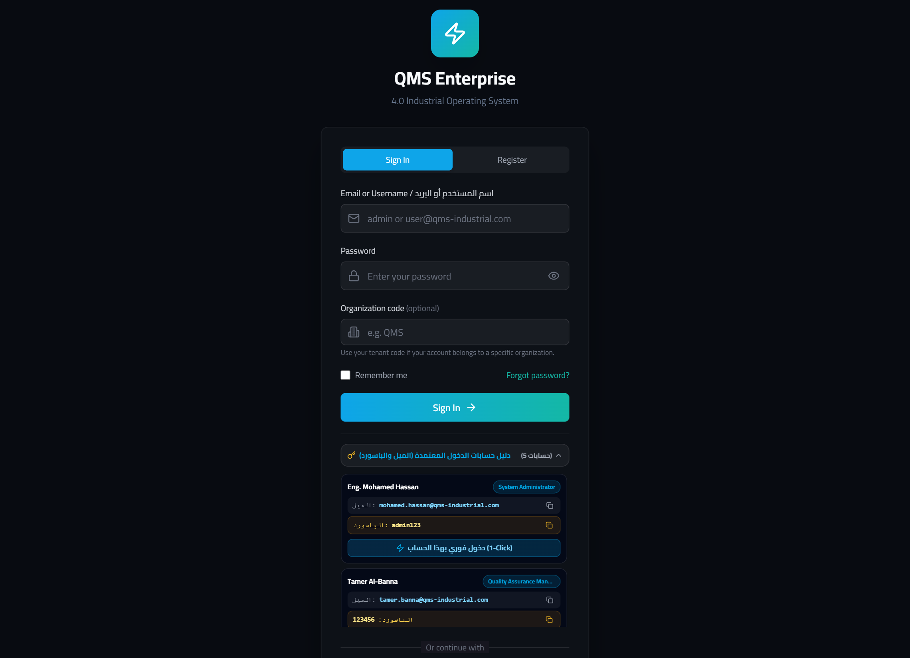
3. السيناريو الأول (Scenario 1): المسار المثالي (Golden Run) — خامة سليمة 100% من الاستلام حتى الشحن للعميل
في هذا السيناريو، تصل شحنة خامات سليمة (Steel Coil 1.90mm - Grade A، رقم التشغيلة LOT-2611-045)، وتمر عبر جميع بوابات الفحص بنجاح دون أي عيوب حتى تخرج للعميل.
sequenceDiagram
autonumber
actor IQC as مفتش جودة الوارد (IQC)
participant INSP as شاشة الفحص (/inspection)
actor OP as مفتش خط الإنتاج (IPQC)
participant SHOP as شاشة الخط (/quality-shopfloor)
participant SPC as الرقابة الإحصائية (/spc)
actor OQC as مفتش الجودة النهائية (OQC)
participant OUT as جودة الصادر (/outgoing-quality)
IQC->>INSP: فتح New Inspection (3-Step Wizard)
IQC->>INSP: إدخال Type=Incoming, Batch=LOT-2611-045, Result=Pass, Defects=0
INSP-->>IQC: حفظ السجل بحالة [pass] وعلامة [مطابق] خضراء (الإفراج للمخزن)
OP->>SHOP: مسح باركود التشغيلة LOT-2611-045 واختيار الموديل والخط
OP->>SHOP: فحص نقاط الخطة (CHK-V01, CHK-V02...) بالضغط على [PASS]
SHOP-->>OP: اعتماد فحص التجميع (Complete Inspection)
OP->>SPC: إدخال قراءات القياس الدورية في منحنى X-bar / I-MR
SPC-->>OP: النقاط داخل UCL/LCL (Process Capable Cpk >= 1.33)
OQC->>OUT: مراجعة مؤشرات الدفعة وإصدار فحص Type=Final & Shipping بحالة Pass
OUT-->>OQC: إصدار شهادة المطابقة وإذن الشحن للعميلالخطوة 1.1: تسجيل فحص وارد مطابق (Incoming QC - Pass) في شاشة الفحص (/inspection)
Inspection (أو انتقل إلى المسار /inspection).+ New Inspection.Step 1 of 3 ➔ Step 2 of 3 ➔ Step 3 of 3) (مع إمكانية التبديل للوضع الكامل عبر زر DISABLE WIZARD MODE في أعلى النافذة).تفصيل الحقول في الخطوة الأولى (Step 1 of 3: Inspection Details):
| اسم الحقل في الشاشة (Field Label) | نوع الحقل والخيارات المتاحة (Type & Options) | القيمة المدخلة في هذا السيناريو | شرح الوظيفة والربط في النظام |
|---|---|---|---|
Product * |
حقل نصي إلزامي (مزود بزر ميكروفون للإدخال الصوتي) | Steel Coil 1.90mm - Grade A |
اسم الخامة أو الصنف المستلم كما هو معرف في Master Data. |
Batch |
حقل نصي (مزود بزر ميكروفون للإدخال الصوتي) | LOT-2611-045 |
رقم تشغيلة المورد أو لوط الاستلام الذي سيُستخدم في التتبع (Traceability) طوال دورة الإنتاج. |
INSPECTION DATE |
محدد تاريخ (Date Picker) | 2026-11-06 |
تاريخ إجراء الفحص الفعلي في منطقة الاستلام. |
Result |
قائمة منسدلة (Pass, Fail, Pending) |
Pass |
القرار المبدئي/النهائي للفحص (مطابق للمواصفات). |
بعد ملء حقول الخطوة الأولى، اضغط على الزر الأزرق Next في أسفل يمين النافذة للانتقال إلى الخطوة الثانية.
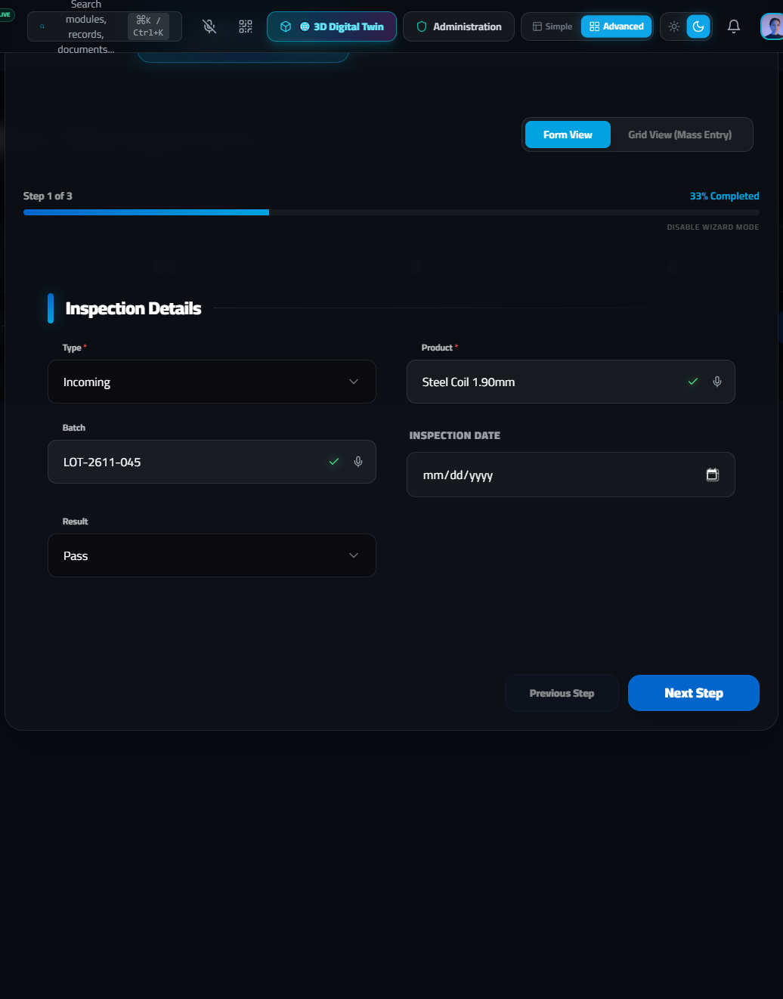
تفصيل الحقول في الخطوة الثانية (Step 2 of 3: Measurements & Findings):
| اسم الحقل في الشاشة (Field Label) | نوع الحقل والخيارات المتاحة | القيمة المدخلة في هذا السيناريو | شرح الوظيفة والربط في النظام |
|---|---|---|---|
Defect Count |
رقمي (Number) | 0 |
إجمالي عدد القطع المعيبة المكتشفة في العينة (صفر في حالة المطابقة الكاملة). |
Defect Type / نوع العيب |
نصي + إدخال صوتي | (يُترك فارغاً في حالة Pass) | يُكتب فيه نوع العيب القياسي فقط في حالة وجود حيود. |
Inspection Points |
رقمي (Number) | 5 |
عدد الخصائص الهندسية التي تم فحصها على كل عينة (السمك، العرض، استواء السطح، خلو من الصدأ، شهادة التحليل الكيميائي). |
Inspected By |
نصي + إدخال صوتي | Eng. Sara Ibrahim |
اسم مهندس أو مفتش جودة الوارد المسؤول عن الفحص. |
Notes / Defect Details |
منطقة نصية متعددة الأسطر + إدخال صوتي | All 20 samples within tolerance (1.98mm - 2.02mm). Surface clean, mill certificate verified. |
توثيق القراءات الفعلية المسجلة بالميكروميتر ومطابقة شهادة المنشأ. |
بعد إدخال القياسات، اضغط على زر Next للانتقال إلى الخطوة الثالثة (المراجعة النهائية).
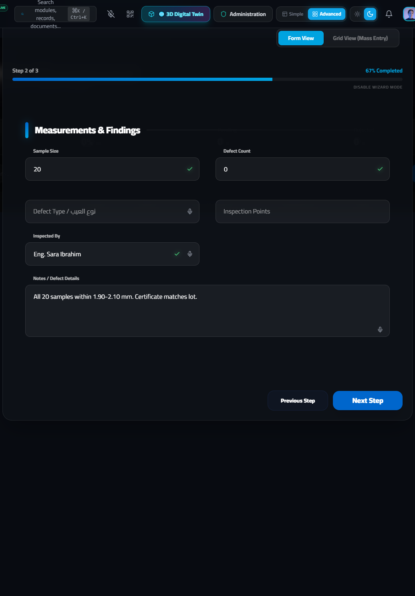
الخطوة الثالثة (Step 3 of 3: Additional Details & Final Submission):
تعرض هذه الخطوة ملخصاً كاملاً لجميع الحقول في شاشة واحدة للمراجعة النهائية قبل الحفظ.
Create Inspection في أسفل يمين النافذة.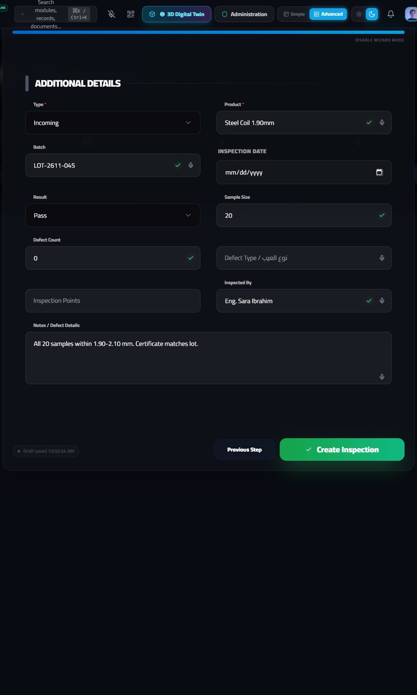
ماذا يحدث في النظام بعد الضغط على Create Inspection؟
Inspection created successfully.pass باللون الأخضر، وعدد عيوب 0 defects، وفي عمود ACTIONS / تصعيد تظهر علامة ✓ مطابق باللون الأخضر.LOT-2611-045 لنقلها من منطقة الاستلام إلى مخزن الخامات المعتمدة وصرفها لخط الإنتاج.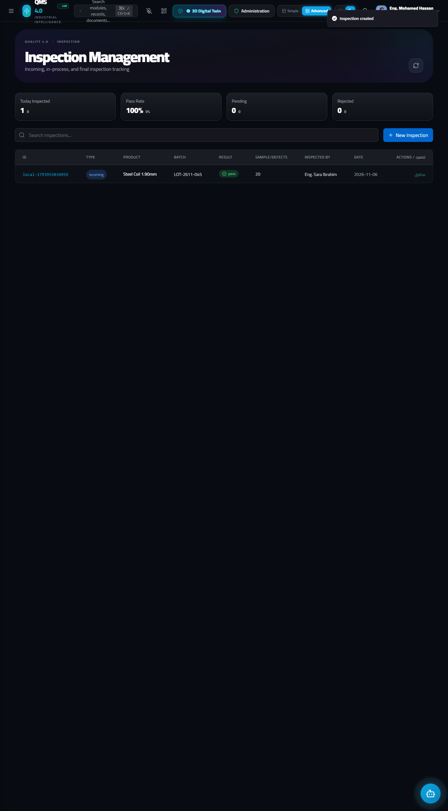
الخطوة 1.2: التسجيل اللحظي أثناء التشغيل والتجميع (Shopfloor Entry — /quality-shopfloor)
بمجرد صرف الخامة السليمة LOT-2611-045 إلى خط الإنتاج، يقوم مفتش جودة الخط (IPQC) بمتابعة العملية عبر شاشة Shopfloor Entry المصممة للشاشات اللمسية والتابلت داخل المصنع:
Shopfloor Entry (/quality-shopfloor).AI Scanner (باللون البنفسجي): لفتح الكاميرا وقراءة الباركود أو فحص المنتج بالرؤية الحاسوبية.المسجل الصوتي الذكي (Q-Elite Voice Copilot): يسمح للمفتش بنطق البيانات صوتياً باللغة العربية أو الإنجليزية (زر ابدأ التحدث) ليقوم النظام بملء الحقول تلقائياً دون استخدام اليدين.Shift & Line Context):Scan barcode or enter part... + زر Lookup: مسح باركود التشغيلة LOT-2611-045 أو كود الصنف لاستدعاء خطة الفحص المرتبطة به آلياً.QUANTITY: تحديد الكمية المفحوصة باستخدام أزرار - و +.SHIFT: اختيار الوردية بالضغط على زر Morning أو Afternoon أو Night.LINE: اختيار خط الإنتاج (مثل Line 1 - Main Assembly).MODEL: اختيار موديل المنتج الجاري تجميعه (مثل Model X1 - Standard).INSPECTION POINT: اختيار بوابة الفحص على الخط (مثل In-Process Assembly أو End of Line).Inspection Plan Checks):Control Plan مع نسبة الإنجاز المئوية في الأعلى:CHK-V01 (Surface Finish Inspection — Visual): فحص خلو السطح من الخدوش أو الصدمات ➔ يضغط المفتش على زر PASS الأخضر.CHK-V02 (Label Placement & Print Quality — Visual): فحص دقة الملصق ووضوح الباركود ➔ يضغط المفتش على زر PASS.CHK-D01 (Overall Length Check — Dimensional): قياس الطول الكلي بالقدمة 150.0mm ± 0.5mm ➔ يضغط المفتش على زر PASS.CHK-D02 (Mounting Hole Diameter — Dimensional): فحص قطر ثقوب التثبيت بـ Go/No-Go Gauge 8.0mm +0.1/-0.0 ➔ يضغط المفتش على زر PASS.CHK-F01 (Power-On Self Test — Functional): اختبار التشغيل الذاتي ➔ يضغط المفتش على زر PASS.Complete Inspection (أو Save Record / Save & New في الشريط السفلي) لاعتماد الدفعة وترحيلها للمرحلة التالية.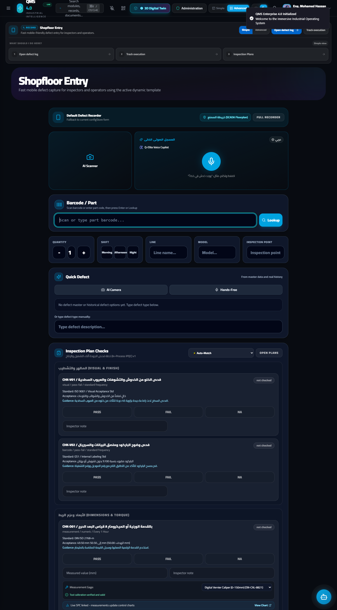
الخطوة 1.3: الرقابة الإحصائية للعمليات (SPC Control Charts — /spc)
بالتوازي مع فحص القوائم، يقوم مهندس/مفتش الجودة بإدخال القياسات الرقمية الدورية في شاشة SPC (/spc) لمراقبة استقرار العملية ومؤشرات القدرة (Cp و Cpk):
SPC (/spc).+ Add Characteristic وتحديد Nominal, USL, LSL, Subgroup Size).X-bar & R Chart) أو القراءات الفردية (Switch to I-MR Chart).Record & Plot Reading):Record & Plot Reading.UCL) والحد الأدنى للضبط (LCL) حول خط المركز (CL)، وتظهر حالة العملية IN CONTROL باللون الأخضر مع قيمة Cpk ≥ 1.33، مما يؤكد عدم وجود أي انحراف في الماكينات.
الخطوة 1.4: الفحص النهائي وفحص ما قبل الشحن (Outgoing Quality — /outgoing-quality و /inspection)
بعد انتهاء التجميع والتغليف، تنتقل الدفعة إلى بوابة جودة الصادر (Outgoing Quality - OQC):
Outgoing Quality (/outgoing-quality) لمراجعة مؤشرات قبول الدفعات (Lot Acceptance Rate %) وحالة الشحنات الجاهزة./inspection واضغط + New Inspection.Type = Final (أو Shipping)، وأدخل رقم التشغيلة LOT-2611-045، و Result = Pass، و Defect Count = 0.Create Inspection.pass / مطابق في الفحص النهائي، وتُطبع شهادة المطابقة (Certificate of Conformance - CoC)، وتخرج الشحنة للعميل بنسبة جودة 100% (First Pass Yield).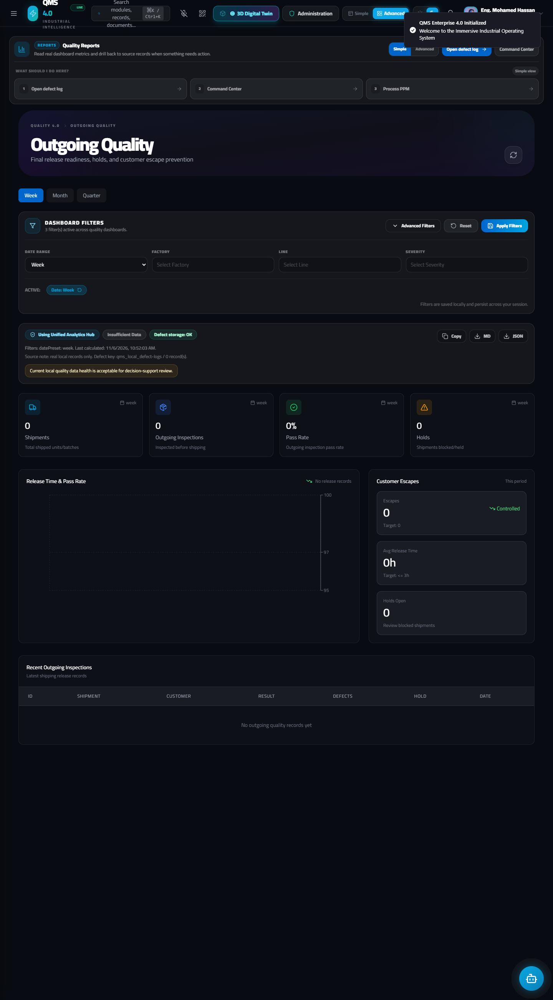
4. السيناريو الثاني (Scenario 2): خامة مرفوضة أو معلقة تحت القرار (Holding / Quarantine) في فحص الوارد
في هذا السيناريو، تصل شحنة خامات جديدة من المورد (Steel Coil 1.90mm - Grade B، رقم التشغيلة LOT-2611-099). أثناء فحص الاستلام (IQC)، يكتشف المفتش أن سمك الصاج الفعلي 1.82 mm (أقل من الحد الأدنى المسموح به هندسياً 1.92 mm) في 5 عينات من أصل 20 عينة، مع وجود صدأ سطحي.
يتم إيقاف الشحنة فوراً في منطقة العزل (Quarantine / Holding Area) لحين صدور قرار لجنة مراجعة المواد (MRB) التي تختار أحد مسارين:
Return to Vendor - RTV) مع خصم نقاط تقييم المورد آلياً.Conditional Acceptance via Deviation / Waiver) إذا كانت درجة الحيود تسمح بالتشغيل تحت شروط هندسية خاصة وبموافقة ثلاثية (مدير الإنتاج + مدير الجودة + مدير الهندسة).flowchart TD
A["وصول شحنة خامة LOT-2611-099"] --> B["تسجيل فحص وارد في /inspection\nType = Incoming | Result = Fail | Defects = 5"]
B --> C["إجراءات النظام الآلية الفورية فور الحفظ:"]
C --> C1["1. خصم آلي من تقييم جودة المورد\nورسالة تنبيه فورية Toast"]
C --> C2["2. ظهور أزرار التصعيد في الجدول:\nزر (فتح NCR) + زر (المورد)"]
C2 -->|"الضغط على زر (فتح NCR)"| D["انتقال آلي إلى /ncr?create=1&...\nوتعبئة 8 حقول تلقائياً في نافذة NCR"]
D --> E["حفظ السجل بحالة Open\nوقرار مبدئي Pending MRB (Holding / Quarantine)"]
E --> F{"اجتماع لجنة مراجعة المواد (MRB)"}
F -->|"المسار (أ): العيب جسيم ولا يصلح للتشغيل"| G["تعديل قرار NCR إلى:\nReturn to Vendor (RTV)"]
G --> G1["الضغط على زر (المورد) للانتقال إلى /supplier-quality\nوتسجيل مخالفة المورد ومطالبة 8D"]
F -->|"المسار (ب): العيب يمكن قبوله استثنائياً بشروط"| H["الانتقال إلى /deviation\nوفتح معالج طلب الحيود (4-Step Wizard)"]
H --> H1["الحصول على اعتماد مدير الإنتاج + الجودة + الهندسة\nوتحديد فترة صلاحية التجاوز (Effective From / Valid Until)"]
H1 --> H2["تحديث قرار NCR إلى Use As Is (بموجب رقم الحيود)\nوالإفراج المشروط عن الكمية المحددة فقط"]الخطوة 2.1: تسجيل فحص وارد راسب (Incoming QC - Fail) في شاشة الفحص (/inspection)
Inspection (/inspection) واضغط على زر + New Inspection.Step 1 of 3: Inspection Details)، أدخل البيانات التالية:Type *: اختر Incoming.Product *: اكتب Steel Coil 1.90mm - Grade B.Batch: اكتب LOT-2611-099.INSPECTION DATE: اختر 2026-11-06.Result: اختر Fail (أو اختر Pending إذا كنت تنتظر إعادة سحب عينة مضاعفة قبل تأكيد الرسوب).Next.Step 2 of 3: Measurements & Findings)، أدخل تفاصيل العيب المكتشف بدقة:| اسم الحقل في الشاشة (Field Label) | القيمة المدخلة في حالة الرسوب | الأهمية التشغيلية |
|---|---|---|
Defect Count |
5 |
عدد القطع المعيبة التي تجاوزت حد القبول (Ac/Re). |
Defect Type / نوع العيب |
Thickness below minimum (1.82mm vs 1.92mm min) |
مهم جداً: هذا النص يظهر كشارة تحذيرية في الجدول وينتقل تلقائياً لوصف مشكلة الـ NCR عند التصعيد! |
Inspection Points |
5 |
عدد نقاط الفحص. |
Inspected By |
Eng. Ahmed Hassan |
اسم مفتش الوارد الذي ضبط المخالفة. |
Notes / Defect Details |
5 out of 20 samples measured 1.81-1.83mm. Lot quarantined in Hold Area B2. |
تحديد مكان حجز الشحنة فعلياً في المخزن (Hold Area B2). |
Next لمراجعة البيانات في الخطوة الثالثة (Step 3 of 3)، ثم اضغط على الزر الأخضر Create Inspection.
<!-- slide -->
ماذا يحدث في النظام فور الضغط على Create Inspection لفحص وارد راسب؟
بمجرد حفظ السجل بحالة Fail ونوع Incoming، يقوم محرك النظام بتنفيذ 3 إجراءات أوتوماتيكية في نفس اللحظة:
> "تم تحديث تقييم جودة المورد آلياً بناءً على حيود فحص الوارد"
إلى جانب رسالة التأكيد الخضراء Inspection created successfully.
fail باللون الأحمر في عمود RESULT.5 defects باللون الأحمر مع شارة نوع العيب Thickness below minimum... باللون البرتقالي في عمود DEFECTS / نوع العيب.ACTIONS / تصعيد): بدلاً من كلمة مطابق، يظهر زرّان تفاعليان في عمود الإجراءات:
فتح NCR (باللون الأحمر): لفتح تقرير عدم مطابقة وتمرير بيانات الفحص إليه تلقائياً.المورد (باللون الأزرق): للانتقال المباشر إلى ملف المورد في موديول جودة الموردين (/supplier-quality).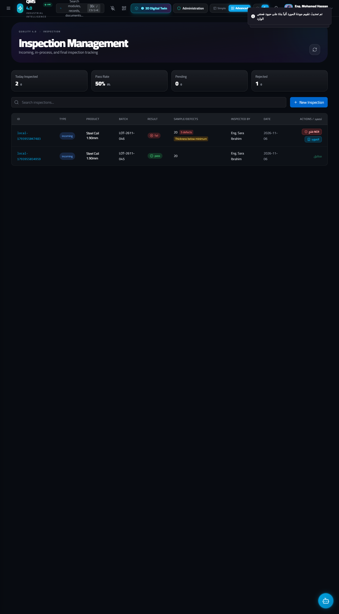
الخطوة 2.2: الضغط على زر (فتح NCR) والتعبئة الآلية لبيانات عدم المطابقة (/ncr)
عندما يضغط مفتش جودة الوارد على الزر الأحمر فتح NCR أمام سطر الفحص الراسب:
/ncr?create=1&title=فشل فحص وارد: Steel Coil 1.90mm - Grade B&defectType=Thickness below minimum (1.82mm vs 1.92mm min)&line=Incoming Inspection&qty=5&lot=LOT-2611-099&desc=...&severity=major
Non-Conformance Reports (NCR) ويقوم بفتح نافذة Create New NCR تلقائياً مع ملء الحقول الأساسية باللغة العربية والإنجليزية من واقع تقرير الفحص دون الحاجة لإعادة كتابتها!
<!-- slide -->
الخطوة 2.3: شرح تفصيلي كامل لجميع حقول نافذة عدم المطابقة (Create New NCR — 16 حقلاً)
سواء تم فتح نافذة Create New NCR تلقائياً عبر زر فتح NCR من شاشة الفحص، أو يدوياً عبر زر + New NCR في شاشة /ncr، تحتوي النافذة على 16 حقلاً هندسياً وإدارياً مقسمة وظيفياً كالتالي:
| # | اسم الحقل في الشاشة (Field Label) | نوع الحقل والخيارات المتاحة (Dropdown Options) | القيمة المسجلة في السيناريو | وظيفة الحقل وكيفية استخدامه في حالة الرفض أو الهولدنج (Holding) |
|---|---|---|---|---|
| 2 | Defect Type |
نصي | Dimensional / Geometry |
تصنيف العيب القياسي لربطه بتحليلات باريتو (Pareto Analysis). |
| 3 | Status |
قائمة منسدلة: • Open• In Progress• Under Review• Disposition• Closed |
Open (أو Under Review أثناء الهولدنج) |
يحدد مرحلة التقرير الحالية: يبدأ بـ Open عند الضبط، ويتحول إلى Under Review أثناء دراسة لجنة MRB، ثم Disposition عند صدور القرار، وأخيراً Closed بعد تنفيذ الإجراء. |
| 4 | Severity |
قائمة منسدلة: • Critical• Major• Minor |
Major |
درجة خطورة العيب على سلامة المنتج أو قابليته للتشغيل. |
| 5 | Priority |
قائمة منسدلة: • Critical• High• Medium• Low |
High |
أولوية المعالجة (عالية لأن الشحنة متوقفة في أرضية الاستلام). |
| 6 | Production Line |
نصي | Press Line 01 - Incoming |
منطقة الاكتشاف أو الخط المتأثر. |
| 7 | Affected Quantity |
رقمي | 500 |
إجمالي كمية اللوط المحجوزة بالكامل (مثلاً 500 كجم أو 500 لوح). |
| 8 | Lot Number |
نصي | LOT-2611-099 |
رقم التشغيلة المعزولة لمنع صرفها على النظام. |
| 9 | Assigned To |
نصي | Eng. Mahmoud Reda (SQE) |
مهندس جودة الموردين (SQE) المكلف بمتابعة الملف. |
| 10 | Department |
نصي | Supplier Quality / IQC |
القسم المسؤول عن تنفيذ الاحتواء والقرار. |
| 11 | Due Date |
تاريخ (Date) | 2026-11-10 |
الموعد النهائي لإغلاق حالة عدم المطابقة. |
| 12 | Description |
منطقة نصية (Textarea) | Incoming steel coil thickness measured at 1.82mm against specification 2.00mm +/- 0.08mm. |
الوصف الهندسي التفصيلي للحيود بالمقارنة مع المواصفة القياسية. |
| 13 | Containment Action (خلفية صفراء) |
منطقة نصية (Textarea) | Quarantined entire lot LOT-2611-099 in Red Hold Area B2. Attached Red Hold Tag #HT-904. Blocked ERP release. |
إجراء الاحتواء الفوري (إلزامي): توثيق عزل الشحنة في منطقة الحجر (Quarantine) وتعليق كارت الإيقاف الأحمر (Red Hold Tag). |
| 14 | Disposition Decision (خلفية برتقالية) |
قائمة منسدلة: • Pending MRB• Rework• Scrap• Return to Vendor• Use As Is |
• في حالة الهولدنج (تحت القرار): يُختار Pending MRB.• في حالة الرفض النهائي: يُختار Return to Vendor.• في حالة القبول بتجاوز: يُختار Use As Is. |
أهم حقل قرار في الشاشة: يحدد مصير الخامة المحجوزة. |
| 15 | Disposition Notes |
نصي | MRB approved full RTV. Debit note #DN-2026-112 issued. |
رقم محضر اجتماع لجنة MRB أو رقم إشعار الخصم المالي (Debit Note) أو رقم طلب الحيود (Deviation ID). |
| 16 | Root Cause Investigation Notes (خلفية زرقاء) |
منطقة نصية (Textarea) | Supplier rolling mill gauge sensor drift during batch production. |
نتائج التحقيق المبدئي في السبب الجذري تمهيداً لفتح 8D. |
بعد استكمال الحقول، اضغط على زر Create NCR في أسفل يمين النافذة.

<!-- slide -->

<!-- slide -->
تفرع القرار بعد حجز الخامة (MRB Decision Branches):
المسار (أ): قرار الرفض النهائي وإرجاع الشحنة للمورد (Return to Vendor - RTV) ومتابعة المورد (/supplier-quality)
إذا قررت لجنة مراجعة المواد (MRB) رفض الشحنة نهائياً:
NCR، يتم تحديد Disposition Decision = Return to Vendor./inspection)، اضغط على الزر الأزرق المورد أمام الشحنة المرفوضة (أو انتقل إلى Supplier Quality عبر المسار /supplier-quality)./supplier-quality:Quality Score %, On-Time Delivery %, Defect Rate PPM) التي تم تحديثها آلياً بعد رسوب الفحص.+ Add Supplier لملء بياناته (Supplier Name *, Code, Category, Status [Approved, Conditional, Probation, Disqualified], ISO Status, Contact Person, Email, Phone, Quality Score %, On-Time Delivery %, Defect Rate (PPM), Last Audit Date, Next Audit Date, Notes).SCAR / Supplier 8D Request) لإرجاع اللوط LOT-2611-099 واسترداد قيمته المالية.
<!-- slide -->
المسار (ب): القبول الاستثنائي المشروط بطلب حيود/تجاوز هندسي (Deviation / Waiver Request — /deviation)
ماذا لو كانت الخامة المحجوزة في الهولدنج بها حيود طفيف (مثلاً سمك الصاج 1.90 mm بدلاً من 1.92 mm) وخط الإنتاج مهدد بالتوقف، وأثبتت الإدارة الهندسية أن هذا الحيود لن يؤثر على الأمان الوظيفي للمنتج إذا تم تقليل سرعة مكبس التشكيل بنسبة 15%؟
في هذه الحالة يُمنع منعاً باتاً الإفراج عن الخامة شفوياً، بل يجب إصدار تصريح حيود/تجاوز رسمي موثق (Deviation / Waiver Request) عبر المسار /deviation:
Deviation / Waiver (/deviation).+ Request Deviation في أعلى اليمين.Step 1 of 4 إلى Step 4 of 4):##### الخطوة 1 من 4 (Step 1 of 4: General Information — البيانات الأساسية):
| اسم الحقل (Field Label) | نوع الحقل والخيارات المتاحة | القيمة المدخلة في السيناريو | الشرح |
|---|---|---|---|
Deviation Type * |
قائمة منسدلة: • Temporary• Permanent• Emergency |
Temporary |
نوع الحيود: مؤقت (تجاوز لدفعة محددة أو فترة محددة)، دائم (يتطلب تعديل الرسم الهندسي لاحقاً)، أو طارئ. |
Status * |
قائمة منسدلة: • Draft• Submitted• Under Review• Approved• Rejected• Expired |
Approved (بعد استكمال التوقيعات) |
حالة الطلب في دورة الاعتماد. |
Requestor * |
نصي إلزامي | Eng. Tarek Mansour |
اسم المهندس مقدم طلب التجاوز. |
REQUEST DATE * |
تاريخ إلزامي | 2026-11-06 |
تاريخ تقديم الطلب. |
اضغط Next للانتقال للخطوة الثانية.
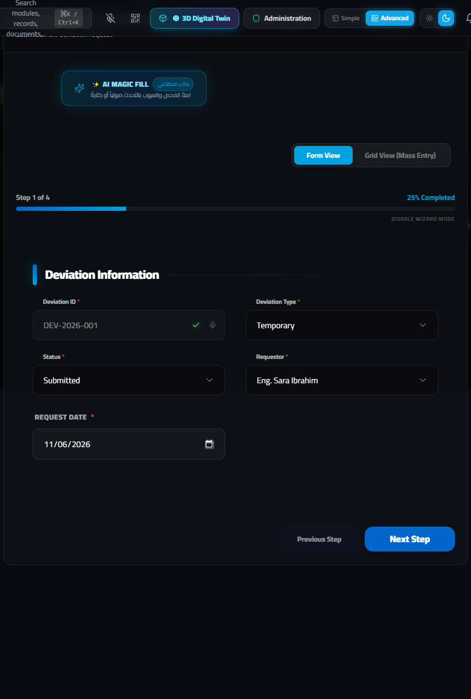
##### الخطوة 2 من 4 (Step 2 of 4: Deviation Details — تفاصيل الحيود والدفعات المتأثرة):
| اسم الحقل (Field Label) | نوع الحقل | القيمة المدخلة في السيناريو | الشرح |
|---|---|---|---|
Product Name * |
نصي إلزامي | Compressor Housing Model X1 |
اسم المنتج الذي ستدخل فيه هذه الخامة. |
Deviation Description * |
منطقة نصية إلزامية | Accept temporary thickness of 1.90mm instead of 1.92mm min for 200 units only. |
تحديد سقف التجاوز بدقة (القياس المسموح به والكمية القصوى المسموح بتشغيلها: 200 قطعة فقط). |
Reason for Deviation * |
منطقة نصية إلزامية | Urgent customer delivery schedule and validated FEA structural safety margin. |
المبرر التجاري والهندسي لطلب الاستثناء. |
Affected Products/Lots |
نصي | LOT-2611-099 (Sub-batch A: 200 pcs) |
ربط التصريح برقم اللوط المحجوز في الـ NCR لمنع استخدام التصريح لأي شحنة أخرى. |
اضغط Next للانتقال للخطوة الثالثة.
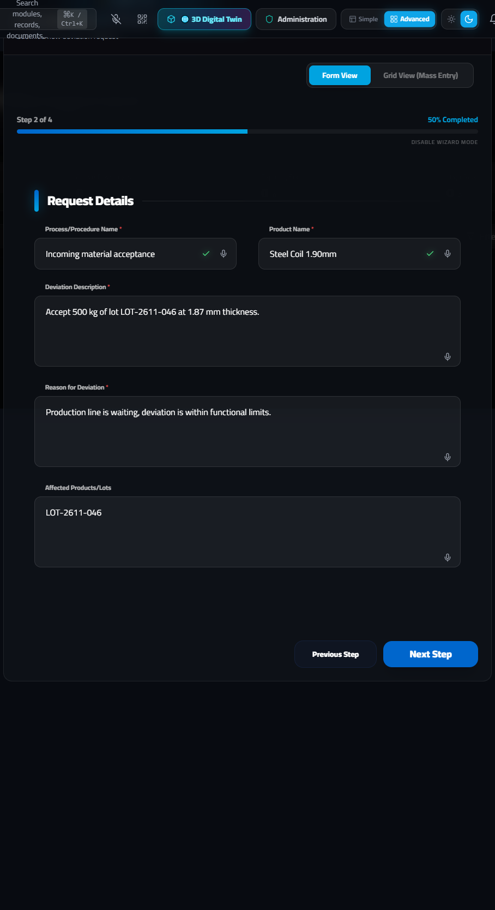
##### الخطوة 3 من 4 (Step 3 of 4: Risk Assessment — تقييم المخاطر وخطة التخفيف):
| اسم الحقل (Field Label) | نوع الحقل | القيمة المدخلة في السيناريو | الشرح |
|---|---|---|---|
Impact on Quality |
منطقة نصية | No functional impact on burst pressure test up to 45 bar. |
الأثر على جودة وأداء المنتج النهائي بناءً على الاختبارات المعملية. |
Risk Analysis * |
منطقة نصية إلزامية | FEA simulation confirms safety factor remains 2.4x (above 2.0x minimum requirement). |
التحليل الهندسي الداعم لقرار القبول المشروط. |
Risk Mitigation Plan * |
منطقة نصية إلزامية | 100% ultrasonic wall thickness check after deep drawing + reduce press speed by 15%. |
الشرط الإلزامي للتشغيل: الضوابط الإضافية التي سيلتزم بها خط الإنتاج ومفتش الجودة أثناء تشغيل هذه الدفعة. |
اضغط Next للانتقال للخطوة الرابعة والأخيرة.
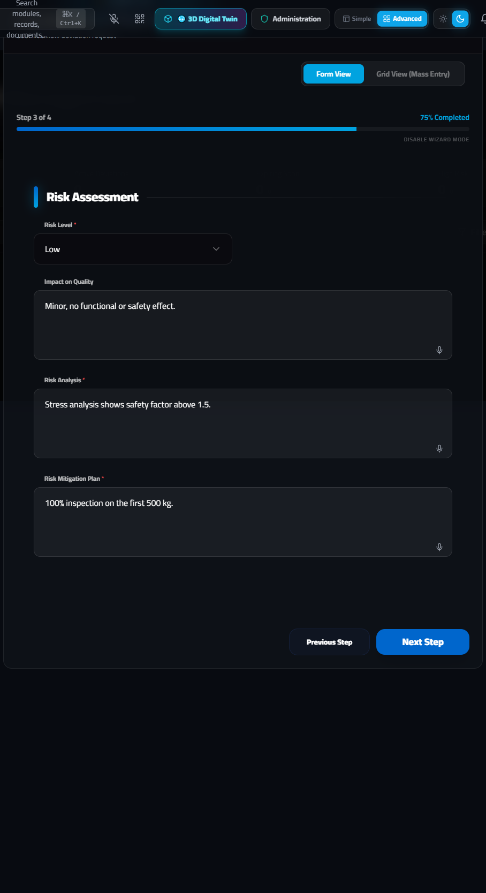
##### الخطوة 4 من 4 (Step 4 of 4: Approvals & Validity — التوقيعات الثلاثية وفترة الصلاحية الزمنية):
| اسم الحقل (Field Label) | نوع الحقل | القيمة المدخلة في السيناريو | الشرح |
|---|---|---|---|
Quality Manager Approval * |
نصي إلزامي | Eng. Hany Adel - Approved |
توقيع واعتماد مدير الجودة بالالتزام بفحص 100% بالموجات فوق الصوتية. |
Engineering Manager Approval * |
نصي إلزامي | Dr. Sherif Nabil - Approved |
توقيع واعتماد مدير الهندسة على سلامة التصميم تحت هذا التجاوز. |
EFFECTIVE FROM * |
تاريخ إلزامي | 2026-11-06 |
تاريخ بدء سريان التصريح. |
VALID UNTIL * |
تاريخ إلزامي | 2026-11-20 |
تاريخ انتهاء الصلاحية: بعد هذا التاريخ يتحول التصريح تلقائياً إلى Expired ويُمنع استخدام أي رصيد متبقٍ من الخامة. |
اضغط على الزر الأخضر Create Deviation Request لإصدار التصريح رسمياً، ثم ارجع إلى بطاقة الـ NCR وقم بتحديث القرار (Disposition Decision) من Pending MRB إلى Use As Is مع كتابة رقم التصريح DEV-2026-019 في حقل Disposition Notes.

<!-- slide -->
5. السيناريو الثالث (Scenario 3): خامة اجتازت الوارد وظهرت بها عيوب أثناء التجميع على خط الإنتاج (In-Process / Assembly Defects)
في هذا السيناريو، اجتازت الخامة أو المكونات فحص الوارد ودخلت إلى خط التجميع واللحام (Welding Line 02 - Station 4). أثناء عملية التجميع والفحص المرحلي (In-Process QC)، اكتشف المفتش ظهور مسامية وضعف في لحام غلاف الضاغط (Weld Porosity & Spatter) ورسوب في اختبار تسريب الضغط بنسب غير طبيعية (18 قطعة معيبة في الوردية الصباحية من التشغيلة LOT-2611-099).
flowchart TD
S1["ظهور عيب تجميع/لحام على خط الإنتاج\n(Welding Line 02 - Station 4)"] --> S2["التسجيل الفوري للعيب عبر إحدى الشاشتين:"]
S2 --> S2A["1. شاشة خط الإنتاج /quality-shopfloor\n(اختيار FAIL على نقطة الفحص أو Quick Defect)"]
S2 --> S2B["2. السجل الذكي للعيوب اليومية /defect-log\n(تسجيل العيب وتصنيفه وتحديد المحطة والوردية)"]
S2A & S2B --> S3["التتبع العكسي والأمامي الفوري في برج التتبع\n(/quality-control-tower - Traceability Tower)"]
S3 --> S4["تحديد جميع الدفعات ونصف المصنع المرتبط باللوط\nوحجزها بالكامل (Quarantine WIP) + فتح NCR داخلي"]
S4 --> S5["إطلاق فريق حل المشكلات 8D (/8d - 21 حقلاً)\n(D0 إلى D8 + تحليل 5-Why / Fishbone)"]
S5 --> S6["إصدار إجراء تصحيحي ووقائي CAPA (/capa - 14 حقلاً)\nلتعديل النظام ومنع التكرار"]
S6 --> S7["الحلقة المغلقة (Closed-Loop Feedback):\nتحديث RPN في PFMEA (/fmea) وتعديل Control Plan (/control-plan)"]الخطوة 3.1: رصد وتسجيل العيب على خط التجميع (/quality-shopfloor و /defect-log)
يتيح النظام لمفتش خط الإنتاج ومهندس جودة التشغيل طريقتين متكاملتين لتسجيل عيوب التجميع فور ظهورها:
الطريقة الأولى: التسجيل اللحظي من شاشة خط الإنتاج (Shopfloor Entry — /quality-shopfloor)
Inspection Plan Checks) في شاشة /quality-shopfloor:CHK-V01 أو CHK-F01)، يضغط المفتش على الزر الأحمر FAIL بدلاً من PASS.Quick Defect على يسار الشاشة:AI Camera لتصوير عيب التجميع مباشرة، أو زر Hands-Free لنطق اسم العيب صوتياً.Enter defect type... وتحديد درجة الخطورة (Minor / Major / Critical) والكمية المعيبة ثم الضغط على زر +.Scratch, Dent, Color Mismatch, Dimension Out, Missing Part, Poor Finish).Add Photo / File لإرفاق صورة العيب، ثم الضغط على Save Record.الطريقة الثانية: السجل الذكي للعيوب اليومية وحوكمة دورة حياة العيب (Smart Daily Defect Recorder — /defect-log)
للتحليل التفصيلي وإدارة دورة حياة العيوب اليومية عبر الورديات، انتقل إلى Defect Log (/defect-log):
New Entry (تسجيل عيب جديد): يدعم وضع النموذج التفصيلي (Form View) أو وضع الإدخال الجماعي السريع بنظام الجداول (Grid View (Mass Entry)) لتسجيل عشرات العيوب في ثوانٍ.Defect Records (سجل العيوب): عرض وفلترة جميع عيوب التجميع المسجلة مع أزرار تصعيد مباشر إلى NCR أو CAPA.Lifecycle Details (تفاصيل دورة حياة العيب): متابعة حالة كل عيب من لحظة الرصد وحتى الإغلاق.Workflow Dashboard (لوحة سير العمل): متابعة معدلات العيوب حسب الخط والوردية.My Tasks (مهامي): المهام المسندة لمهندس الجودة لمعالجة العيوب المفتوحة.Governance Settings (إعدادات الحوكمة): ضبط حدود التنبيه الآلي (Thresholds) التي تفرض فتح NCR أو 8D إجبارياً إذا تكرر نفس عيب التجميع أكثر من عدد معين في الوردية.Pareto Analysis (تحليل باريتو 80/20): رسم بياني آلي يحدد أهم 20% من أسباب العيوب المسؤولة عن 80% من مشاكل التجميع.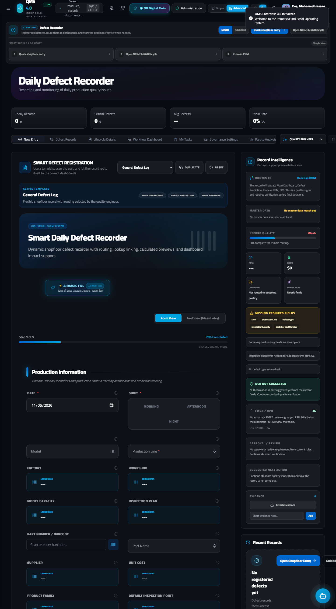
الخطوة 3.2: التتبع العكسي والأمامي وحجز الدفعات عبر برج التتبع (Traceability Control Tower — /quality-control-tower)
بمجرد اكتشاف عيب أثناء التجميع، يجب فوراً الإجابة على سؤالين حاسمين:
Raw Material Lot)، ومن هو المورد، وما هي الماكينة وفني التشغيل وأداة القياس التي مرت عليها هذه القطع المعيبة؟WIP) أو في مخزن المنتج التام تم تجميعها من نفس تشغيلة الخامة أو على نفس إعدادات الماكينة وتحتاج إلى حجز فوري قبل أن تصل للعميل؟خطوات التنفيذ في النظام:
Traceability Tower (/quality-control-tower).LOT-2611-099) أو الرقم التسلسلي للقطعة (Serial Number).Live Lot & Material Traceability Flow شجرة التتبع الكاملة من المورد ➔ فحص الوارد ➔ محطات التشغيل والتجميع ➔ حالة الـ NCR و CAPA المرتبطة باللوط، ممايمكّن مهندس الجودة من حجز جميع الكميات المشتبه بها (WIP Quarantine) في دقائق معدودة.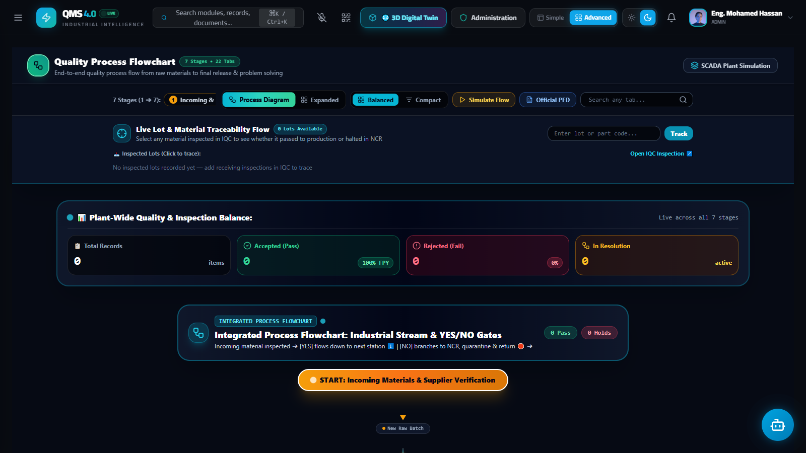
الخطوة 3.3: فتح منهجية حل المشكلات الجذرية (8D Problem Solving — /8d) — شرح كامل لـ 21 حقلاً
بعد حجز الكميات المعيبة وفتح تقرير عدم مطابقة داخلي (/ncr)، يتطلب عيب التجميع المتكرر أو الجسيم تشكيل فريق متعدد التخصصات (Cross-Functional Team) لحل المشكلة جذرياً باستخدام منهجية 8D Problem Solving:
8D Problem Solving (/8d).+ New 8D في أعلى اليمين.Create New 8D Report التي تضم 21 حقلاً هندسياً تغطي المراحل من D0 إلى D8 بالكامل:| # | اسم الحقل في الشاشة (Field Label) | نوع الحقل والخيارات المتاحة (Dropdown Options) | القيمة المدخلة في سيناريو عيب التجميع | المرحلة المقابلة في منهجية 8D وشرح الاستخدام |
|---|---|---|---|---|
| 2 | 8D Number |
نصي (يُولد تلقائياً أو يُعدل) | 8D-2026-5948 |
الرقم المرجعي لتقرير الـ 8D. |
| 3 | Status Phase |
قائمة منسدلة لـ 10 مراحل: • D0: Plan• D1: Team• D2: Problem• D3: Containment• D4: Root Cause• D5: Corrective• D6: Validate• D7: Prevent• D8: Congratulate• Closed |
D4: Root Cause (أو المرحلة الحالية للفريق) |
يحدد المرحلة التي وصل إليها فريق حل المشكلة حالياً، ويظهر كشريط تقدم (Progress Bar) على بطاقة الـ 8D. |
| 4 | Analysis Method |
قائمة منسدلة: • 5-Why Analysis• Fishbone (Ishikawa)• FMEA• Fault Tree• Pareto Analysis |
5-Why Analysis |
الأداة التحليلية المستخدمة للوصول للسبب الجذري. |
| 5 | Effectiveness Check |
قائمة منسدلة: • Pending• Effective• Ineffective |
Effective (بعد التحقق في D6) |
نتيجة فحص فعالية الإجراءات التصحيحية بعد تطبيقها. |
| 6 | Team Leader * |
نصي إلزامي | Eng. Omar Farouk (Lead QE) |
D1 (Establish the Team): قائد فريق حل المشكلة. |
| 7 | Champion |
نصي | Eng. Hany Adel (Quality Director) |
الراعي الإداري للفريق (لإزالة العقبات واعتماد الموارد). |
| 8 | Members (comma separated) |
نصي | M. Saeed (Production), K. Nabil (Maintenance), R. Taha (Process Eng) |
أعضاء الفريق من أقسام الإنتاج، الصيانة، وهندسة العمليات. |
| 9 | Product / Part |
نصي | Compressor Housing Model X1 |
اسم المنتج أو الجزء المتأثر بعيب التجميع. |
| 10 | Production Line |
نصي | Welding Line 02 - Station 4 |
خط ومحطة التجميع التي ظهر بها العيب. |
| 11 | Lot Number |
نصي | LOT-2611-099 |
رقم التشغيلة المتأثرة. |
| 12 | Source NCR |
نصي (ربط مرجعي) | NCR-2026-842 |
الربط المباشر: رقم تقرير الـ NCR الذي فجّر هذا التحقيق. |
| 13 | D2 - Problem Description |
منطقة نصية | 5W2H: High porosity and spatter detected on circumferential weld seam during pressure leak test (18 units failed in Morning Shift). |
D2 (Describe the Problem): صياغة المشكلة بمنهجية 5W2H (ماذا، أين، متى، من، لماذا، كيف، وكم عدد القطع المعيبة). |
| 14 | D3 - Containment Action (ICA) |
منطقة نصية | 100% X-ray and pneumatic leak testing at 12 bar for all WIP batches from Welding Line 02. |
D3 (Interim Containment Action): إجراء الاحتواء المؤقت لحماية العميل والخطوط اللاحقة لحين تطبيق الحل الجذري. |
| 15 | Contained Qty |
رقمي | 320 |
إجمالي عدد القطع التي تم فحصها واحتواؤها في خطوة D3. |
| 16 | D4 - Root Cause |
منطقة نصية | Shielding gas (Argon/CO2) flow rate dropped to 6 L/min due to clogged solenoid valve filter and worn regulator seal. |
D4 (Root Cause Analysis): السبب الجذري التقني الذي أدى لظهور مسامية اللحام. |
| 17 | 5-Why Breakdown |
منطقة نصية متعددة الأسطر | Why 1: Porosity in weld seam -> Why 2: Atmospheric oxygen contamination in weld pool -> Why 3: Shielding gas flow below 15 L/min -> Why 4: Solenoid filter clogged with oil mist -> Why 5: Filter replacement not included in weekly PM checklist. |
تحليل اللماذات الخمس (5-Why): التدرج المنطقي من العَرَض الظاهري (Why 1) حتى السبب النظامي في خطة الصيانة الوقائية (Why 5). |
| 18 | D5 - Corrective Actions (PCA) |
منطقة نصية | Install digital inline mass-flow sensor with automatic PLC machine interlock if gas flow drops below 14 L/min. |
D5 (Permanent Corrective Actions): الحل الهندسي الدائم (Poka-Yoke / منع الخطأ تلقائياً عبر حساس تدفق يوقف ماكينة اللحام آلياً إذا انخفض الغاز). |
| 19 | D6 - Validation Results |
منطقة نصية | 3 consecutive shifts (1,500 units) produced with zero porosity defects. Cpk improved from 0.89 to 1.68. |
D6 (Implement & Validate PCA): إثبات نجاح الحل بالأرقام ومؤشر القدرة Cpk عبر 3 ورديات متتالية. |
| 20 | D7 - Preventive Plan |
منطقة نصية | Updated PFMEA #PF-W02 (RPN reduced from 180 to 36) and Control Plan #CP-W02 to include daily gas flow verification. |
D7 (Prevent Recurrence): تحديث وثائق الـ PFMEA و Control Plan وخطط الصيانة الوقائية على جميع خطوط اللحام المماثلة. |
| 21 | D8 - Lessons Learned |
منطقة نصية | Standardized inline gas flow interlock across all 6 robotic welding cells in Plant 1 & Plant 2. |
D8 (Congratulate Team & Lessons Learned): تعميم الدروس المستفادة أفقياً (Yokoten) على باقي خلايا الإنتاج. |
اضغط على زر Create 8D لحفظ التقرير وإصدار بطاقة الـ 8D التفاعلية.

<!-- slide -->
الخطوة 3.4: إطلاق الإجراءات التصحيحية والوقائية (CAPA — /capa) — شرح كامل لـ 14 حقلاً والربط المغلق
لتحويل مخرجات المرحلتين D5 و D7 من تقرير الـ 8D إلى مهام تنفيذية ملزمة بمواعيد استحقاق ومُلاك محددين ومتابعة تحقق من الفعالية، يتم تسجيل CAPA رسمي في المسار /capa:
CAPA (/capa).+ New CAPA في أعلى اليمين.Create New CAPA التي تضم 14 حقلاً تفصيلياً:| # | اسم الحقل في الشاشة (Field Label) | نوع الحقل والخيارات المتاحة (Dropdown Options) | القيمة المدخلة في السيناريو | شرح الوظيفة |
|---|---|---|---|---|
| 2 | Action Type |
قائمة منسدلة: • Corrective• Preventive |
Corrective |
يحدد ما إذا كان الإجراء تصحيحياً (لمنع تكرار مشكلة حدثت بالفعل) أو وقائياً (لمنع خطر محتمل). |
| 3 | Status Phase |
قائمة منسدلة: • Identified• Analysis• Action• Verification• Closed |
Verification |
مرحلة تقدم الـ CAPA الحالية. |
| 4 | Priority |
قائمة منسدلة: • Critical• High• Medium• Low |
High |
أولوية التنفيذ والمتابعة. |
| 5 | Target Date |
تاريخ (Date) | 2026-11-15 |
التاريخ المستهدف لإنجاز الإجراء بالكامل. |
| 6 | Owner |
نصي | Eng. Karim Nabil (Maintenance Lead) |
الشخص المسؤول مباشرة عن تنفيذ الإجراء. |
| 7 | Department |
نصي | Maintenance & Process Engineering |
الإدارة المسؤولة. |
| 8 | Source NCR ID |
نصي (ربط مرجعي) | NCR-2026-842 |
ربط الـ CAPA بتقرير عدم المطابقة الأصلي. |
| 9 | Problem Statement |
منطقة نصية | Recurring weld porosity defects on Line 02 caused by unmonitored shielding gas pressure drops. |
بيان المشكلة المراد القضاء على سببها الجذري. |
| 10 | Root Cause |
منطقة نصية | Absence of automated low-flow interlock and missing PM schedule for gas solenoid filters. |
السبب الجذري المستخلص من تحليل الـ 8D. |
| 11 | 5-Why Analysis |
منطقة نصية | 1. Weld porosity -> 2. Low Argon flow -> 3. Clogged filter -> 4. No pressure switch -> 5. Omitted in equipment design FMEA. |
توثيق سلسلة اللماذات الخمس داخل سجل الـ CAPA. |
| 12 | Corrective Action Plan |
منطقة نصية | 1. Retrofit digital flow switch IFM-SD6000 wired to PLC stop circuit. 2. Replace all solenoid filters on Lines 01-04. |
خطوات الفعل التصحيحي الهندسي المباشر. |
| 13 | Preventive Action Plan |
منطقة نصية | 1. Add weekly filter inspection to PM module. 2. Update PFMEA and Control Plan across all welding lines. |
خطوات الفعل الوقائي وتحديث الوثائق لمنع ظهور المشكلة في خطوط أخرى. |
| 14 | Effectiveness Verification |
قائمة منسدلة: • Pending Verification• Effective• Ineffective |
Effective |
لا يُسمح بإغلاق الـ CAPA نهائياً إلا بعد تحول هذا الحقل إلى Effective بعد فترة المراقبة المحددة. |
اضغط على زر Create CAPA لحفظ السجل. وبمجرد تنفيذ البند الوقائي، يعود مهندس الجودة إلى شاشة PFMEA (/fmea) لخفض درجة التكرار والاكتشاف (Occurrence & Detection) مما يخفض الـ RPN، ويحدّث شاشة Control Plan (/control-plan) لإضافة نقطة الفحص الجديدة، لتكتمل بذلك الحلقة المغلقة (Closed-Loop Quality System).

<!-- slide -->
6. السيناريو الرابع (Scenario 4): اكتشاف عيوب في الفحص النهائي أو ما قبل الشحن (Outgoing Quality — OQC)
في هذا السيناريو، اكتمل تجميع المنتج وانتقل إلى منطقة الفحص النهائي وتجهيز الشحنات (Outgoing Quality / FQC & OQC). أثناء سحب عينة ما قبل الشحن (Pre-Shipment Audit / AQL Inspection)، اكتشف مفتش الصادر عيباً ظاهرياً أو وظيفياً (مثلاً: تقشير في طبقة الدهان الحراري Paint Peeling أو خطأ في ملصق الباركود النهائي أو عدم اجتياز اختبار العزل الكهربائي).
flowchart LR
O1["وصول الدفعة الجاهزة لمنطقة الشحن\n(/outgoing-quality)"] --> O2["تسجيل فحص في /inspection\nType = Final أو Shipping | Result = Fail"]
O2 --> O3["إيقاف إذن الشحن فوراً (Shipment Block)\nوظهور زر التصعيد الأحمر (فتح NCR)"]
O3 --> O4["فتح NCR داخلي تلقائياً (/ncr)\nوتحديد قرار MRB:\nRework (إعادة تشغيل/فرز 100%) أو Scrap (إعدام)"]
O4 --> O5["تسجيل التكلفة المالية للفرز وإعادة التشغيل\nأو الخردة في موديول تكلفة العيوب (/defect-cost - COPQ)"]
O5 --> O6["إعادة تقديم الدفعة للفحص النهائي 100% (Re-Inspection)\nولا يُسمح بالشحن إلا بعد الحصول على Result = Pass"]الخطوة 4.1: رصد العيب في بوابة الفحص النهائي وإيقاف الشحن (/outgoing-quality و /inspection)
Outgoing Quality (/outgoing-quality) لمراجعة الدفعات الجاهزة للشحن، والتي تعرض:Lot Acceptance Rate % (نسبة قبول الدفعات من أول مرة).Lots Rejected / On Hold (الدفعات الموقوفة قبل الشحن).Final & Shipping Inspections).Inspection (/inspection) ويضغط + New Inspection:Step 1 of 3):Type *: يختار Final (فحص نهائي) أو Shipping (فحص ما قبل الشحن).Product *: يكتب اسم المنتج التام (Compressor Housing Model X1).Batch: يكتب رقم دفعة الشحن (BATCH-SHP-2611-12).Result: يختار Fail.Step 2 of 3):Sample Size = 32)، وعدد القطع المعيبة (Defect Count = 4)، ونوع العيب (Paint Peeling & Barcode Misalignment)، والملاحظات (Shipment blocked at Loading Dock 02. 100% sorting required.).Step 3 of 3): يضغط Create Inspection.الخطوة 4.2: التصعيد إلى NCR داخلي بقرار فرز وإعادة تشغيل (Rework) أو إعدام (Scrap)
Final أو Shipping بحالة Fail، يظهر زر فتح NCR الأحمر في عمود الإجراءات بجدول الفحص.فتح NCR، تفتح نافذة Create New NCR في /ncr محملة ببيانات الدفعة الموقوفة.Containment Action: Blocked Delivery Note #DN-8841. Moved all 400 packed cartons from Shipping Dock to Quarantine Area Q-Final for 100% sorting.Disposition Decision:Rework بالنسبة للقطع التي يمكن إعادة رشها أو تعديل ملصقاتها (مثلاً 385 قطعة بعد الفرز).Scrap بالنسبة للقطع التالفة التي لا يمكن إصلاحها (مثلاً 15 قطعة).Re-Inspection Requirement):Rework)، يتم تسجيل فحص جديد في /inspection بنوع Final مع ذكر Re-inspection after NCR-2026-XXX في الملاحظات، ولا يُفرج عن الشحنة لبوابة الخروج إلا بعد حصولها على Result = Pass وصفر عيوب.الخطوة 4.3: الاحتساب المالي لتكلفة الجودة الرديئة (COPQ / Defect Cost — /defect-cost)
كل قطعة تم إعدامها (Scrap) أو إعادة تشغيلها وفرزها (Rework / 100% Sorting) في الفحص النهائي أو على الخط تمثل خسارة مالية مباشرة للمصنع يجب توثيقها في شاشة Defect Cost (COPQ) (/defect-cost):
Defect Cost (COPQ) (/defect-cost).PAF Model):Internal Failure Costs (تكاليف الفشل الداخلي): تشمل تكلفة الخردة (Scrap Cost)، ساعات عمل إعادة التشغيل (Rework Labor Hours)، تكلفة الفرز 100% (Sorting Cost)، وإعادة الفحص (Re-inspection).External Failure Costs (تكاليف الفشل الخارجي): تكاليف مرتجعات العملاء (RMA)، الضمان (Warranty Claims)، والشحن العكسي.Appraisal Costs (تكاليف التقييم والفحص) و Prevention Costs (تكاليف الوقاية والتدريب).NCR لتظهر أمام الإدارة العليا التكلفة الحقيقية لكل عيب بالعملة المحلية/الدولار، مما يوجه أولويات مشاريع التحسين (CAPA).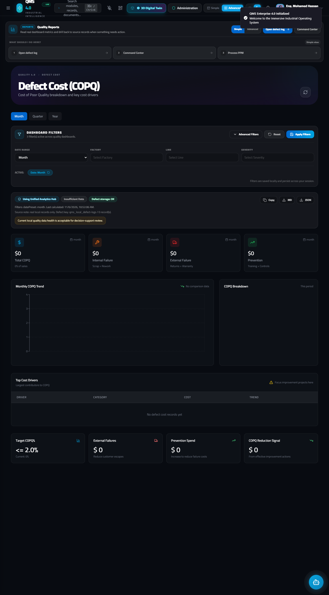
7. السيناريو الخامس (Scenario 5): ظهور عيوب لدى العميل (Customer Complaint / RMA)
في هذا السيناريو (وهو الأعلى خطورة)، وصلت شحنة إلى مصنع العميل (Al-Futtaim Industrial Systems)، وأثناء تركيب المنتج لدى العميل، ظهر عيب في تشطيب السطح وتسريب في 15 وحدة من التشغيلة LOT-2611-099. قام العميل بإرسال شكوى رسمية وطلب إرجاع (RMA).
sequenceDiagram
autonumber
actor CUST as العميل (Customer)
actor CQE as مهندس جودة العملاء (CQE)
participant CMP as شكاوى العملاء (/complaints - 5-Step Wizard)
participant TRACE as برج التتبع (/quality-control-tower)
participant NCR8D as الاحتواء والتحليل (/ncr + /8d + /capa)
participant ISO as حوكمة الأيزو ومراجعة الإدارة (/iso-governance)
CUST->>CQE: إرسال شكوى رسمية (Email / Portal) بوجود 15 قطعة معيبة في LOT-2611-099
CQE->>CMP: فتح معالج تسجيل الشكوى (+ Log Complaint) ذي الـ 5 خطوات
CQE->>CMP: إدخال الخطوات 1 (General) ➔ 2 (Customer) ➔ 3 (Product/Batch) ➔ 4 (Details/Due Date) ➔ 5 (Actions)
CMP-->>CQE: حفظ الشكوى CMP-2026-088 بحالة Investigating وأولوية High
CQE->>TRACE: إدخال Batch=LOT-2611-099 في برج التتبع لحصر أي رصيد متبقٍ بالمخازن
CQE->>NCR8D: إصدار إجراء احتواء خلال 24 ساعة (D3) + فتح 8D للعميل + إصدار CAPA وتحديث PFMEA
NCR8D->>ISO: ترحيل مؤشرات شكاوى العملاء وحالة الـ CAPA إلى مراجعة الإدارة وتدقيق ISO 9001الخطوة 5.1: تسجيل شكوى العميل عبر المعالج الخماسي الكامل (5-Step Wizard) في شاشة (/complaints)
Customer Complaints (/complaints).+ Log Complaint في أعلى اليمين.Step 1 of 5 إلى Step 5 of 5):الخطوة 1 من 5 (Step 1 of 5: General Information — البيانات الأساسية ومصدر الشكوى):
| اسم الحقل في الشاشة (Field Label) | نوع الحقل والخيارات المتاحة (Dropdown Options) | القيمة المدخلة في السيناريو | شرح الوظيفة |
|---|---|---|---|
DATE RECEIVED * |
تاريخ إلزامي | 2026-11-06 |
تاريخ استلام الشكوى من العميل (يُحسب منه عداد الـ 24 ساعة للاحتواء المبدئي D3). |
Source * |
قائمة منسدلة: • Phone• Email• Web Portal• Customer Visit• Letter |
Email |
قناة ورود الشكوى من العميل. |
Status * |
قائمة منسدلة: • New• Investigating• Resolved• Closed |
Investigating |
حالة الشكوى الحالية. |
Priority * |
قائمة منسدلة: • Low• Medium• High• Critical |
High |
درجة أولوية التعامل مع الشكوى. |
اضغط Next للانتقال للخطوة الثانية.
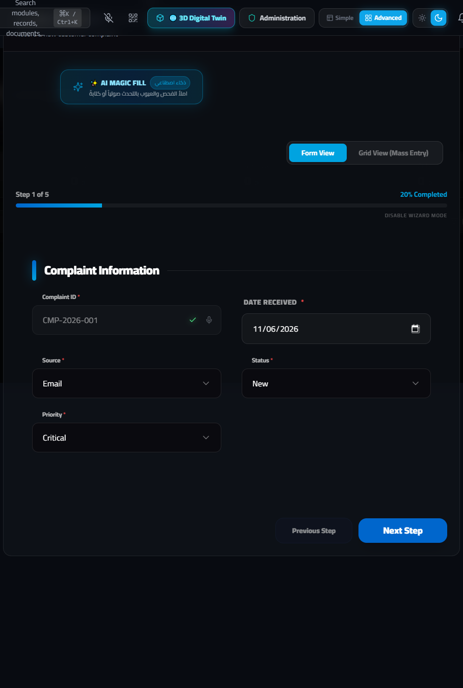
الخطوة 2 من 5 (Step 2 of 5: Customer Information — بيانات العميل ومسؤول التواصل):
| اسم الحقل في الشاشة (Field Label) | نوع الحقل | القيمة المدخلة في السيناريو | شرح الوظيفة |
|---|---|---|---|
Contact Person |
نصي | Eng. Yasser Al-Qahtani |
اسم مهندس أو مدير جودة العميل الذي أبلغ عن المشكلة. |
Phone Number |
نصي (هاتف) | +971-50-4489210 |
رقم التواصل المباشر للتنسيق الفوري بشأن الاحتواء والاستبدال. |
Email |
بريد إلكتروني | y.alqahtani@alfuttaim-ind.ae |
البريد الإلكتروني الرسمي لإرسال تقرير الـ 8D عليه. |
اضغط Next للانتقال للخطوة الثالثة.
الخطوة 3 من 5 (Step 3 of 5: Product & Batch Traceability — بيانات المنتج ورقم التشغيلة والكمية):
| اسم الحقل في الشاشة (Field Label) | نوع الحقل | القيمة المدخلة في السيناريو | شرح الوظيفة |
|---|---|---|---|
Serial Number |
نصي | SN-X1-2026-00412 to 00426 |
الأرقام التسلسلية للوحدات المعيبة. |
Batch Number |
نصي | LOT-2611-099 |
حقل التتبع الحاسم: رقم التشغيلة الذي يُستخدم فوراً في برج التتبع (/quality-control-tower) لمعرفة تاريخ إنتاجها، ومفتش النهائي الذي أفرج عنها، وخاماتها. |
Quantity Affected |
رقمي | 15 |
عدد القطع المعيبة المكتشفة لدى العميل. |
اضغط Next للانتقال للخطوة الرابعة.
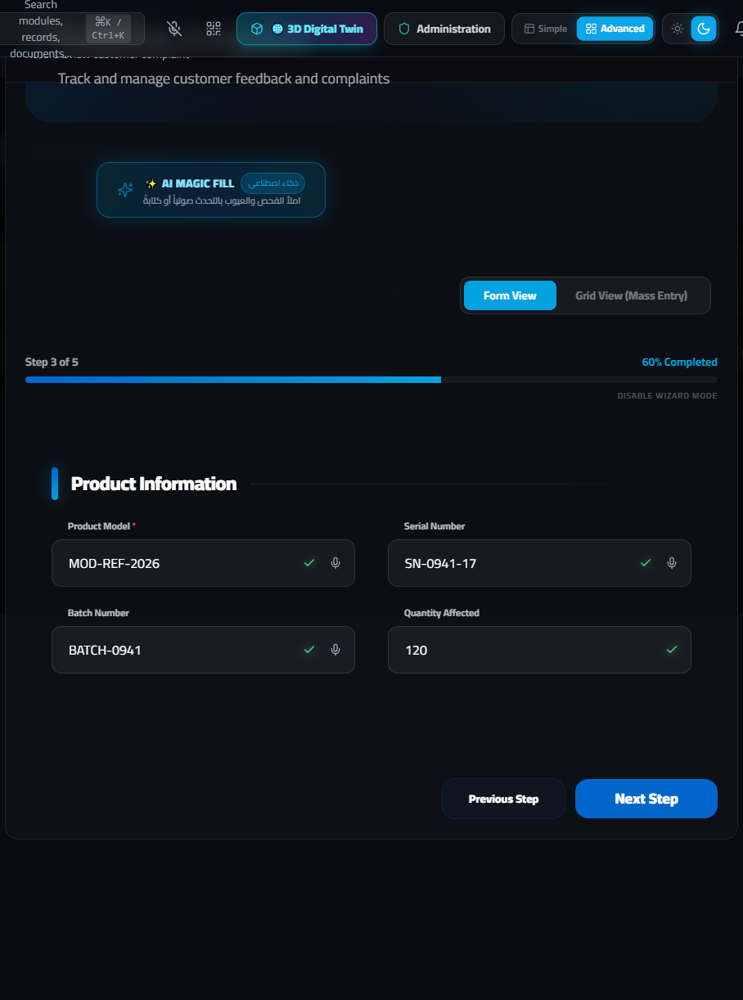
الخطوة 4 من 5 (Step 4 of 5: Complaint Details & SLA — وصف المشكلة ودرجة الخطورة وموعد الرد):
| اسم الحقل في الشاشة (Field Label) | نوع الحقل | القيمة المدخلة في السيناريو | شرح الوظيفة |
|---|---|---|---|
Severity * |
نصي / تصنيف إلزامي | Major |
درجة خطورة العيب لدى العميل. |
Assigned To * |
نصي إلزامي | Eng. Mostafa Kamel (Customer Quality Lead) |
مهندس جودة العملاء (CQE) المسؤول عن قيادة التحقيق والرد على العميل. |
RESPONSE DUE DATE * |
تاريخ إلزامي | 2026-11-09 |
الموعد الإلزامي لتقديم الرد النهائي وتقرير الـ 8D للعميل طبقاً لاتفاقية مستوى الخدمة (SLA). |
اضغط Next للانتقال للخطوة الخامسة والأخيرة.
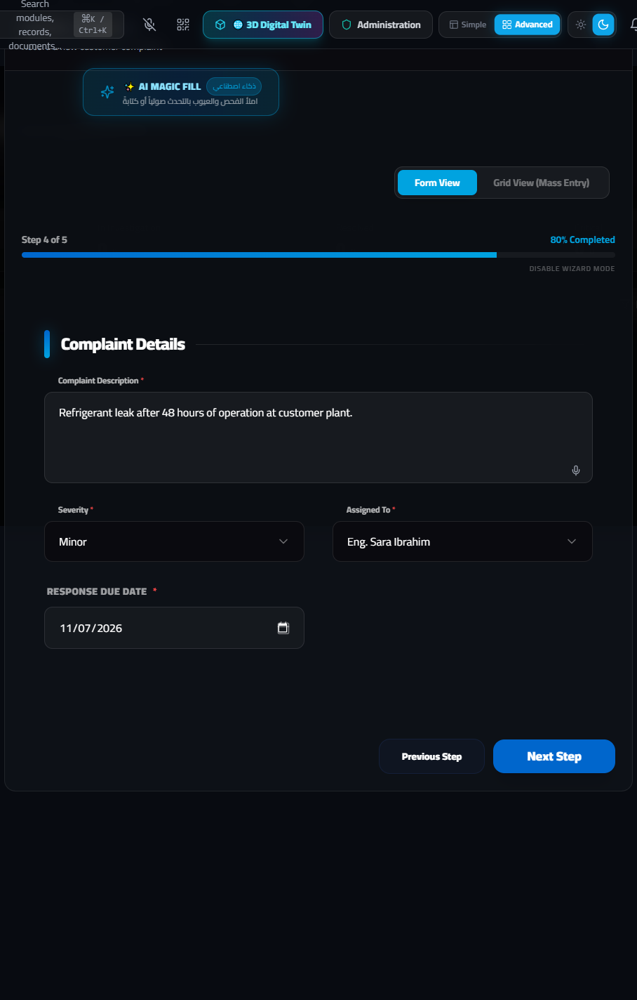
الخطوة 5 من 5 (Step 5 of 5: Investigation & CAPA Actions — نتائج التحقيق والإجراءات التصحيحية والوقائية):
| اسم الحقل في الشاشة (Field Label) | نوع الحقل | القيمة المدخلة في السيناريو | شرح الوظيفة |
|---|---|---|---|
Root Cause |
منطقة نصية | Die cushion hydraulic proportional valve calibration drift caused uneven drawing pressure, plus missed OQC surface check. |
السبب الجذري المزدوج: سبب الحدوث (Occurrence: انحراف صمام ضغط المكبس) + سبب عدم الاكتشاف في الفحص النهائي (Escape / Non-Detection). |
Corrective Action |
منطقة نصية | Issued RMA-2026-041 replacement shipment (15 units air-freighted), recalibrated hydraulic valve, and linked to 8D-2026-5948. |
الإجراء التصحيحي الفوري (إرسال 15 قطعة بديلة، معايرة الصمام، وربط الشكوى بتقرير 8D-2026-5948). |
Preventive Action |
منطقة نصية | Added automated hydraulic pressure alarm limits on Press 01 and updated Final OQC checklist to include eddy-current crack test. |
الإجراء الوقائي لمنع تكرار المشكلة ومنع إفلات أي قطعة مماثلة من الفحص النهائي مستقبلاً. |
CLOSURE DATE |
تاريخ | 2026-11-12 |
تاريخ الإغلاق النهائي للشكوى بعد موافقة العميل واستلامه للبدائل وتقرير الـ 8D. |
اضغط على الزر الأخضر Log Complaint في أسفل يمين النافذة لحفظ الشكوى وإصدار سجل CMP-2026-088.

<!-- slide -->
الخطوة 5.2: الحوكمة ومراجعة الإدارة والتدقيق (ISO 9001 Governance — /iso-governance)
تصب جميع السجلات التي تم إنشاؤها عبر السيناريوهات الخمسة (Inspections, NCR, Deviations, 8D, CAPA, COPQ, Customer Complaints) في المرحلة الثامنة والأخيرة من المنظومة وهي شاشة ISO 9001 Governance (/iso-governance):
ISO 9001:2015 (البنود من Clause 4 إلى Clause 10).Internal & External Audits) وحالات عدم المطابقة النظامية.Management Review) بمؤشرات الأداء الحقيقية لاتخاذ القرارات الاستراتيجية.
8. المصفوفة المرجعية الشاملة للسيناريوهات الخمسة (Quick Master Reference Matrix)
يلخص الجدول التالي مسار العمل الكامل عبر السيناريوهات الخمسة داخل منصة QMS 4.0:
| السيناريو التشغيلي | نقطة البداية (المسار والزر) | الحقول والقيم الحاسمة عند التسجيل | إجراءات النظام الآلية وأزرار التصعيد | قرار الاحتواء والتصرف (Disposition) |
إغلاق الحلقة (Closed-Loop Resolution) |
|---|---|---|---|---|---|
| 2. خامة مرفوضة أو هولدنج في الوارد (IQC Reject / Hold) | /inspection ➔ + New Inspection |
• Type = Incoming• Result = Fail (أو Pending)• Defect Count = 5• Defect Type = ... |
1. تنبيه آلي بتحديث تقييم المورد. 2. ظهور زر فتح NCR (أحمر) وزر المورد (أزرق). |
الضغط على فتح NCR ينقل البيانات آلياً إلى /ncr:• أثناء الهولدنج: Pending MRB• مسار (أ) رفض: Return to Vendor• مسار (ب) قبول بتجاوز: فتح /deviation (4 خطوات) ثم Use As Is |
في حالة الرفض: خصم نقاط المورد في /supplier-quality ومطالبة Supplier 8D.في حالة التجاوز: عمل بشروط خاصة حتى تاريخ VALID UNTIL. |
| 3. خامة عدت الوارد وظهر بها عيوب بالتجميع (Assembly Defect) | /quality-shopfloor (زر FAIL / Quick Defect) أو /defect-log |
تحديد الخط، المحطة، الوردية، نوع العيب، ورقم اللوط LOT-... |
تتبع فوري للوط عبر برج التتبع /quality-control-tower لحصر كل الـ WIP المرتبط |
حجز نصف المصنع (Quarantine WIP) + فتح /ncr داخلي (Rework أو Scrap) |
فتح /8d (21 حقلاً من D0 إلى D8) ➔ فتح /capa (14 حقلاً) ➔ تحديث PFMEA (/fmea) و Control Plan (/control-plan). |
| 4. عيوب بالأوتجوينج قبل الشحن (Outgoing OQC Defect) | /outgoing-quality و /inspection |
• Type = Final أو Shipping• Result = Fail |
إيقاف إذن الشحن فوراً (Shipment Block) + ظهور زر فتح NCR |
فتح /ncr داخلي بقرار Rework (فرز وإعادة تشغيل 100%) و/أو Scrap |
تسجيل التكلفة المالية في /defect-cost (COPQ) + إعادة فحص 100% (Re-Inspection) بحالة Pass قبل السماح بالشحن. |
| 5. عيوب ظهرت لدى العميل (Customer Complaint / RMA) | /complaints ➔ + Log Complaint (5-Step Wizard) |
تعبئة الخطوات الـ 5 (Complaint ID, Customer, Batch, Severity, Due Date, Root Cause) |
ربط رقم اللوط ببرج التتبع /quality-control-tower لفحص أي مخزون متبقٍ بالمصنع |
احتواء خلال 24 ساعة (D3) + إصدار شحنة استبدال RMA |
فتح /8d للعميل + /capa لمعالجة سبب الحدوث (Occurrence) وسبب الإفلات من الفحص النهائي (Escape) + توثيق في /iso-governance. |